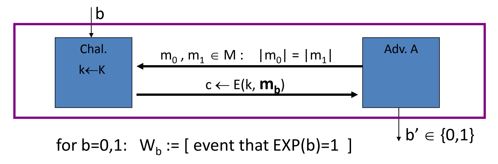
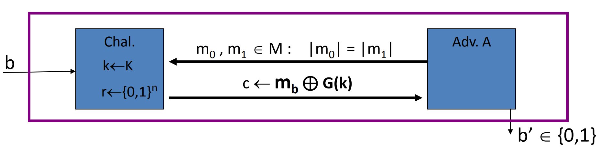
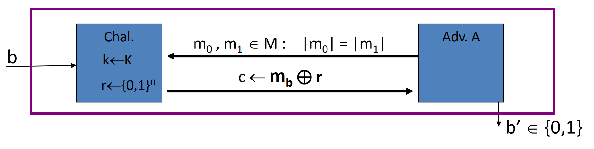
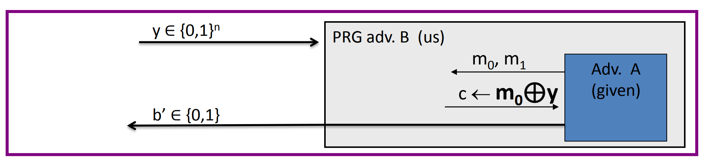

就在这瞬间，黎明的晨星躲到云中了。
# Stream Ciphers
# What is a Cipher?
Definition: A cipher defined over is a pair of “efficient” algorithms where:
where is referred as key space, is referred as message space, is referred as cipher space.
Sometimes we also use notation PT (Plain Text) and CT (Cipher Text).
The function is called encryption and is called decryption. While means the consistency that given a key , then for any message , the decryption of the encryption of is .
What is also important that we always assume that the function and are open to the public, while only the key is kept secret.
- Example:The One Time Pad
OTP(Vernam 1917)
Where is bitwise xor. The One Time Pad is fast and secure if we choose the randomly. However, it needs as long keys as the plain text.
# What is a secure cipher?
Let’s assume that the attacker only have the CT , and the secruity requirement is that the attacker cannot get any information from it.
Definition (Information Theoretic Security, Shannon 1949): A cipher over is perfect secrecy if:
where means that subjects to the uniform distribution over .
The definition indicates that given CT can’t tell if the message is or , in other words, the attacker cannot get any information about PT from the CT .
However, other attacks (not only from CT ) may be possible.
Lemma: OTP is a perfect secrecy cipher, it reveals nothing about PT .(except possible maximum length, from wikipedia).
Proof: First given a message, we can pad it with 0 to the maximum length of . Then:
because , so the number of keys satisfying this condition is .
Then the proof is self-evident, since for any PT and CT , the probability of encryption is all the same.
Theorem: If a cipher over is perfect secrecy, then:
Which indicates that if we want a cipher to be perfect secrecy, we need to have at least as many keys as messages, which is impractical.
# Pseudorandom Generators
How to make OTP more practical?
- Idea: to replace the “random” key by “pseudorandom” key, which is much smaller.
Definition: A pseudorandom generator PRG is a “efficient” function:
where is called the seed space.
Then .
Now since the length of is much smaller than plain text, so it’s impossible to be perfect secure. However, we will define other security requirements later.
Definition: A PRG is predictable if there exists an “efficient” algorithm such that:
where is a non-negligible const.
The definition says that, the PRG is predictable if there exists an algorithm, which is able to predict the bit of the output given the first bits of the output. And works well in most cases.
- Example: random() function if glibc:
is a typical weak PRG and should NOT be used for crypto.
# Negligible vs. Non-negligible
- In practice: Whether is negligible is defined as a scalar, e.g. is non-negligible since it is likely to happen in 1GB data.
- In theory: is a function . is negligible if congruent to 0 faster than . While is non-negligible otherwise.
# Attacks to OTP
# Two time pad is insecure!
If we use the cipher key more than once:
then the attacker can get by xoring .
There are enough redundancy in English and ASCII to recover by knowing .
- Real world examples:Project Venona, MS-PPTP
# OTP is malleable and provides no integrity!
which means that tha attacker can easily modify the plain text even don’t need to know about it.
If the attacker get a CT , then he can modify it by , and send it back. The receiver will decrypt it as , which is modified by the attacker.
# What is a secure PRG ?
Definition: A statistical test on is an “efficient” algorithm , s.t. outputs “0” or “1”.
- Example: outputs “1” iff . Meaning that if the number of 0 and 1 is not too different, then the test believes that the string is random.
Definition(Advantage):let be a PRG and a statistical test on , then the advantage is defined as:
which says given a stat. test , whether can tell the difference between PRG and a real random.
Definition: We say a PRG is a secure PRG if “efficient” statistical test , is negligible.
Lemma: a predictable PRG is insecure.
Proof: if is a predictable PRG , then there exists a predict algorithm satisfying:
Now we can define a statistical test separating and random:
For real random, we have:
because in real random, and are of the same probability.
and we have:
then:
QED.
Theorem(Yao’82): an unpredictable PRG is secure.
Definition: Let be two distributions over , then we say are computationally indistinguishable if for any “efficient” statistical test ,
is negligible. Denoted as
# Semantic security
Definition: We say a cipher over is semantically secure if:
where is a probability distribution over .
Given and an “efficient” algorithm , we can define two experiments:

Adversary give two messages to the channel, then the channel will give back the cipher text determined by and randomly chosen . But don’t know , then will guess the value of .
Let is "when and is randomly chosen, the probability that guess ".
And let is "when and is randomly chosen, the probability that guess ".
Let’s define:
then is semantically secure if for any , is negligible.
- Example: Given a cipher, which we can guess the last bit of
PTbyCT. Then we can construct a :- choose two messages with different last bit.
- pass to the channel.
- after receive the
CT, guess the last bit ofPTbyCT. - output the guess.
in this case, . Since can always guess right. So it’s not semantically secure.
Lemma: Perfect secure Semantically secure.
Proof:obviously,
# Stream ciphers are semantically secure
Theorem: Let be a PRG , then is a secure PRT stream cipher OTP derived from is semantically secure.
Proof: we just need to prove that, adversary , s.t.
Given an adversary , we can construct two experiments:


one using and one using real random to crypt.
Let is when , the guess of first exp is 1.
Let is when , the guess of first exp is 1.
Let is when , the guess of second exp is 1.
Let is when , the guess of second exp is 1.
Since OTP is perfect secrecy when real random:
Next we need to construct an adversary to PRG , and prove:
We can construct as follows:

then
then:
So:
Since , so:
So if PRG is secure, then is negligible, then is negligible.
QED.